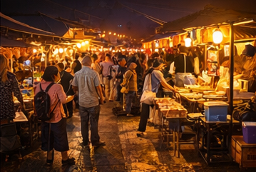
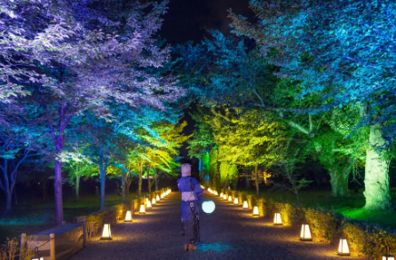
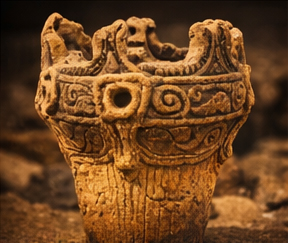
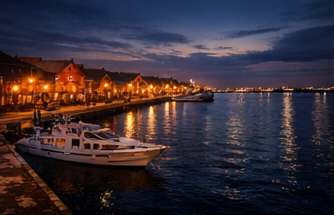

Strategic Design
函館観光の戦略設計
バラバラのアイデアを並べたわけではありません。
データから課題を読み取り、そこから戦略を導き、
具体的な施策を設計しました。
このページでは、その全体の組み立てを説明します。
Chapter 01 — Conclusion First
戦略の結論
函館観光の伸びしろは、集客の問題ではなく、都市の構造にあります。
満足度92.7%。再訪意向94.4%。
函館は、訪れた人のほぼ全員が「満足した」「また来たい」と答える都市です。
にもかかわらず、一人あたりの消費は全国平均を下回り、
滞在は2泊が大半。夜景を見た後に使えるお金の行き先がありません。
この矛盾が意味しているのは明確です。
函館は、魅力が足りないわけではない。
魅力を滞在や消費につなげる仕組みが、まだ整っていないということです。
「通過される都市」から「滞在したくなる都市」へ。
新しい観光名所をつくることよりも、
いまある魅力を「もう少し長く」「もう少し深く」楽しめる仕組みに変えていくことが大切です。
Chapter 02 — Current Position
函館観光の現在地
戦略を考える前に、まず函館観光のいまの姿を正確に把握しておく必要があります。
分析ページで詳述した9つの構造分析から、
戦略に直結する4つの構造課題を抽出した。
構造課題①：滞在時間が短い
国内客の主力は2泊。五稜郭の平均滞在は60分。
「見たら終わり」の構造が滞在延長を阻んでいる。
3泊目に進む理由が、都市側に用意されていない。
構造課題②：夜の消費構造がない
20時以降に「行ける場所」がない。
夜景を見た後の選択肢が「ホテルに帰る」しかない。
2泊目夜の不満率19.0%。
夜の空白が、消費と滞在の天井を決めている。
構造課題③：体験消費が弱い
消費構造の中で「体験・入場」はわずか5%。
飲食と土産に偏り、単価の高い体験消費が育っていない。
世界遺産・歴史資産が消費装置として機能していない。
構造課題④：夏季優位が未活用
函館の7〜8月平均気温は22℃。東京との差は13℃。
この恒常的な気候優位が、
都市ブランドとしても長期滞在の導線としても設計されていない。
本提案の因果構造：すべての施策はデータから逆算して設計されている
Chapter 03 — Strategic Philosophy
戦略の基本思想
本戦略は、3つの基本思想に基づいて設計されている。
新しくつくるのではなく、再編集する
函館にはすでに十分な都市資源がある。
五稜郭、夜景、港、食、縄文遺跡、夏の気候。
必要なのはこれらを増やすことではなく、
「滞在」「消費」「回遊」の文脈で再編集することである。
一つひとつではなく、つながりで効かせる
一つの施策が一つの課題を解決するのではない。
5つの施策が相互に連動し、
都市全体の滞在構造を変えることで、
個別施策の合計以上の効果を生む。
段階的に、でも確実に
一足飛びに理想形を目指さない。
短期（実証）→ 中期（本格稼働）→ 長期（都市ブランド確立）の
3段階で成果を積み上げる設計にしている。
函館らしさを壊して新しい都市をつくろうとしているわけではありません。
すでにある函館の魅力を、いまの旅行者が楽しめる形に編み直す。
それがこの戦略の基本的な考え方です。
Chapter 04 — Four Pillars
上位戦略の4本柱
4つの構造課題に対して、4つの上位戦略を設定した。
すべての施策は、この4本柱のいずれかに紐づく。
Pillar 1：滞在都市化
課題：滞在時間が短く、2泊で完結する構造
方向：「通過される都市」から「滞在される都市」へ転換する
時間消費を増やす仕組みを各拠点に組み込む。 五稜郭を60分→3〜4時間の滞在拠点に変え、 移動そのものを体験に変え、 夜間の消費導線を設計する。 3泊目に進む理由を、都市側が用意する。
Pillar 2：夜経済の創出
課題：20時以降の消費構造が存在しない
方向：夜の空白を埋め、消費と滞在の天井を引き上げる
港エリア・元町・五稜郭に夜間消費の拠点を設計する。 夜景の後に「もう一つの夜」をつくる。 ナイトマーケット、ライトアップ、夜間体験で 2泊目夜の不満を解消し、3泊目への動機を生む。
Pillar 3：体験型都市化
課題：体験消費がわずか5%、「見る観光」に偏重
方向：「見る」から「体験する」へ転換し、消費単価を引き上げる
五稜郭の歴史体験、縄文の世界遺産体験、 移動の体験化（Experience Liner）。 「お金を払ってでも体験したい」コンテンツを設計し、 体験消費比率を5%→15%へ引き上げる。
Pillar 4：避暑都市ブランディング
課題：夏季の気候優位が都市戦略として未活用
方向：「日本の避暑首都」として都市ブランドを確立する
気温差13℃の構造的優位を都市ブランドに転換する。 夏季イベント集約、ワーケーション誘致、長期滞在設計。 温暖化が進むほど価値が増す、 時間とともに強くなる都市戦略。
Chapter 05 — Five Projects
5つの主要施策
4つの上位戦略を実現するために、5つの施策を設計した。
各施策は独立したアイデアではなく、
構造課題から逆算して導出されたものである。

Concept Visualization — 夜の港エリアに消費導線を設計する
施策① Night Economy — 夜間経済圏の創出
解決する課題：20時以降の消費構造の不在、2泊目夜の不満率19.0%
変えること：港エリア・元町・五稜郭に夜間消費の導線を設計。ナイトマーケット、バーストリート、夜間ライトアップで「夜景の後のもう一つの夜」を創出
波及効果：夜間消費+38億円。宿泊延長への動機形成。飲食・小売への波及
上位戦略：夜経済の創出 ／ 滞在都市化

Concept Visualization — 五稜郭の星形を活かした夜間ライトアップ
施策② Goryokaku 2.0 — 五稜郭の第2滞在拠点化
解決する課題：五稜郭の滞在時間60分、「見て終わり」の構造
変えること：歴史体験施設（VR・コスチューム・立体展示）の導入と夜間営業延長。「見る場所」から「滞在拠点」への転換
波及効果：滞在60分→3〜4時間。消費+27億円。周辺飲食への波及
上位戦略：滞在都市化 ／ 体験型都市化 ／ 夜経済の創出

Concept Visualization — 縄文遺跡を体験消費装置に再設計する
施策③ Jomon Experience — 世界遺産の体験消費化
解決する課題：体験消費比率5%、世界遺産が消費装置として未機能
変えること：土器制作、縄文食体験、学びプログラムで半日滞在型の体験消費装置を設計。「見る世界遺産」から「体験する世界遺産」へ
波及効果：消費+18億円。体験単価の引き上げ。教育旅行・富裕層の取り込み
上位戦略：体験型都市化 ／ 避暑都市ブランディング

Concept Visualization — 18分の移動を函館体験の序章に変える
施策④ Experience Liner — 移動の体験化
解決する課題：新函館北斗→函館の18分が「ただの移動」として消費されている
変えること：2両編成の体験型ライナーで、到着前から観光が始まる導線を設計。ラウンジ車両・展望体験で18分を函館の序章に変える
波及効果：消費+12億円。到着体験の向上。函館ブランドの第一印象形成
上位戦略：滞在都市化 ／ 体験型都市化

Concept Visualization — 函館を日本の避暑首都として再定義する
施策⑤ Summer Capital — 避暑都市宣言
解決する課題：気温差13℃の構造的優位が都市戦略として未活用
変えること：「日本の避暑首都」を都市ビジョンとして宣言。夏季イベント集約、ワーケーション拠点整備、長期滞在パッケージで新市場を開拓
波及効果：消費+30億円。長期滞在客の獲得。他4施策の上位概念として機能
上位戦略：避暑都市ブランディング（他4施策を統合する都市ビジョン）
Chapter 06 — Interconnection
施策同士の関係
5つの施策はバラバラのアイデア集ではない。
相互に連動し、一つの都市戦略として機能する。
上位構造：Summer Capital が全体を束ねる
Summer Capital（避暑都市宣言）は、個別施策ではなく都市ビジョンである。
他の4施策に「函館は避暑都市である」という一貫した方向性を与え、
個別の改善を都市ブランドへ統合する上位概念として機能する。
Night Economy × Goryokaku 2.0
五稜郭の夜間営業延長（22時）は、
Night Economyの夜間消費導線と直結する。
五稜郭ライトアップが夜の人流を生み、
周辺飲食の夜間売上を押し上げる。
Goryokaku 2.0 × Jomon Experience
五稜郭の歴史体験と縄文の世界遺産体験は、
「体験型都市化」の両輪として機能する。
函館を「歴史を体験する都市」として再定義する。
Experience Liner × 全施策
Experience Linerは到着体験の入口である。
18分の体験が函館ブランドの第一印象を決め、
到着後の滞在・消費・回遊への期待値を設計する。
Night Economy × Summer Capital
涼しい夏の夜は、夜間消費の最適環境である。
避暑都市の気候優位が夜経済の価値を最大化し、
夜経済が避暑都市の滞在体験を豊かにする。
5つの施策を個別に足し合わせると+125億円。
しかし施策同士がつながることで生まれる波及効果を加えると+150億円になります。
この差の+25億円が、「バラバラの取り組み」と「一つの都市戦略」の違いです。
Chapter 07 — Before / After
戦略が変えるもの
この戦略が実行された場合、函館観光の構造はどう変わるか。
主要指標のBefore / Afterを整理する。
滞在構造
五稜郭
夜の過ごし方
体験消費
到着体験
Chapter 08 — Growth Scenario
成長シナリオ
5つの施策が連動して稼働した場合、
函館観光の経済規模は現状から+150億円の成長が見込まれる。
その内訳と根拠は経済効果ページで詳述している。
構造課題の解消 → 行動変容 → 経済効果の因果
これらの数値は精緻な予測ではなく、
公開データに基づくモデルケースとしての試算である。
重要なのは個々の数字の精度ではなく、
構造を変えれば成長余地があるという方向性そのものである。
Chapter 09 — Execution
戦略を実行に移すために
戦略は、実行されなければ意味がない。
この戦略を機能させるために必要な実行条件を整理する。
段階実装
すべてを一度に実行する必要はない。
短期（1〜2年）で実証事業を開始し、
中期（3〜5年）で本格稼働、
長期（5〜10年）で都市ブランド確立。
詳細は実行ロードマップで示す。
官民連携
行政単独でも民間単独でも実現しない。
行政は制度設計と公共空間の活用を、
民間は事業運営と投資を担う。
官民が役割分担した上で、一つの方向に向かう必要がある。
小さく始める
Night Economyの社会実験、Experience Linerの臨時運行など、
低リスクで効果を検証できる施策から着手する。
成果が確認できた施策から段階的に拡大する。
市民との共有
観光戦略は市民生活と不可分である。
「観光客のための施策」ではなく
「市民の暮らしも豊かにする都市設計」として、
方向性を共有することが実行の基盤になる。
函館を「一度行けば十分な都市」から「何度でも泊まりたくなる都市」へ。
そのために必要なのは、新しい名所を一つつくることではなく、
いまある魅力を「もっと長く、もっと深く」楽しめる仕組みとして束ねることです。
函館には、そのための資源がすでに揃っています。